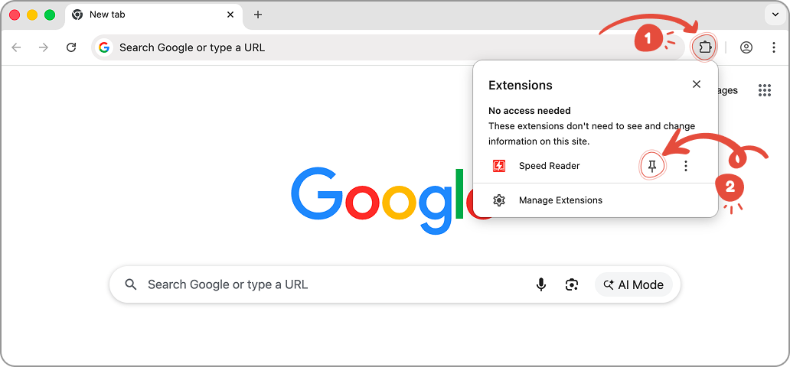
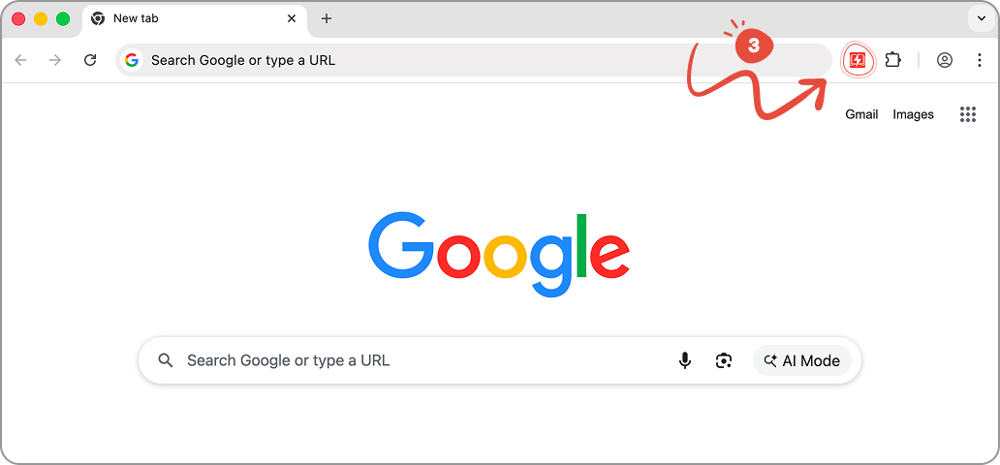

Speed Reader
Speed Reader
Read faster with RSVP technology
1. Pin the extension
Click the puzzle icon (1) in the top right of your browser, then click the pin icon (2) next to Speed Reader to keep it visible.

2. Click the extension icon to start
Click the Speed Reader icon (3) in your toolbar to start speed reading any text on the page.
